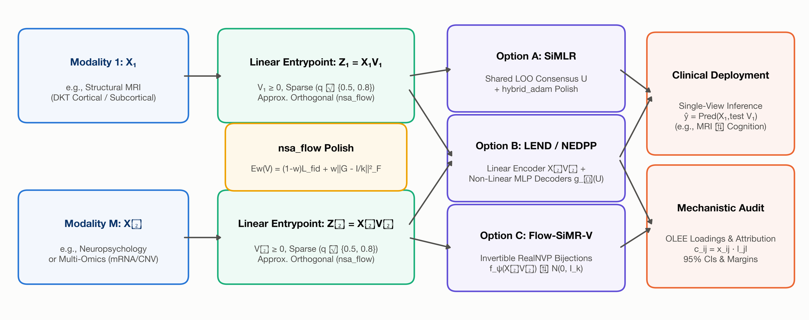

nsa_flow). Downstream alignment modules (SiMLR, LEND, or Flow-SiMR-V) couple modalities during training while preserving direct feature-to-factor interpretability at inference.
To maintain consistent notation across neuroimaging, multi-omics, and statistical learning sections, Table 2.1 defines the core symbols used throughout the manuscript.
| Term | Meaning |
|---|---|
| \(M, N, p_m, k\) | Number of views \(M \ge 2\), sample count \(N\), input dimension \(p_m\) of view \(m\), and shared latent rank \(k \ll \min_m p_m\). |
| \(\mathbf{X}_m \in \mathbb{R}^{N \times p_m}\) | Standardized data matrix for modality \(m\), centered and scaled strictly within each training fold. |
| \(\mathbf{V}_m \in \mathbb{R}_{\ge 0}^{p_m \times k}\) | Non-negative, sparse, approximately orthogonal feature-to-factor projection matrix (scoring rule) for modality \(m\). |
| \(\mathbf{Z}_{m,\text{lin}} = \mathbf{X}_m \mathbf{V}_m\) | Linear entrypoint latent scores (\(\mathbb{R}^{N \times k}\)) mapping raw features directly onto \(k\) interpretable axes. |
| \(\mathbf{U} \in \mathbb{R}^{N \times k}\) | Shared multi-modal subject consensus embedding (SiMLR and LEND, where \(\mathbf{U}^\top \mathbf{U} = \mathbf{I}_k\)). |
| \(\mathbf{C}_m \in \mathbb{R}^{p_m \times k}\) | Structure coefficients \(\operatorname{corr}(\mathbf{X}_m, \mathbf{U}\mathbf{R})\) quantifying feature-to-latent correlations under canonical rotation \(\mathbf{R}\). |
| \(\mathbf{L}_m \in \mathbb{R}^{p_m \times k}\) | Two-stage OLEE loadings: Frobenius-nearest orthogonal factor matrix with disjoint supports under non-negativity. |
| \(\mathbf{R} \in \mathrm{O}(k)\) | Stacked-view Varimax rotation matrix fixing latent rotational indeterminacy with positive dominant loading sign. |
| \(D(\mathbf{V}_m) \in [0, \frac{k-1}{k}]\) | Scale-invariant Stiefel orthogonality and column norm-balance defect diagnostic (\(D(\mathbf{V}_m) = 0\) under exact Stiefel retraction; bounded under nsa_flow). |
| \(w \in (0,1), \; q \in [0,1)\) | nsa_flow fidelity-orthogonality balance weight \(w\) and post-optimization quantile sparsity threshold \(q\). |
Let \(\{\mathbf{X}_m \in \mathbb{R}^{N \times p_m}\}_{m=1}^M\) denote \(M\) data modalities acquired on the same \(N\) subjects during training. Every architecture within the SiMR family maps each view \(m\) into a \(k\)-dimensional latent space exclusively through the linear entrypoint \(\mathbf{Z}_{m,\text{lin}} = \mathbf{X}_m \mathbf{V}_m\) while optimizing a composite objective combining within-view geometric or reconstruction preservation \(\mathcal{L}_{\text{within}}\) and cross-modal alignment \(\mathcal{L}_{\text{align}}\) across the views:
\[ \min_{\{\mathbf{V}_m \in \mathcal{M}_m\}_{m=1}^M, \, \Theta} \; \sum_{m=1}^M \alpha_m \, \mathcal{L}_{\text{within}}(\mathbf{X}_m, \mathbf{V}_m; \Theta) + \lambda_{\text{align}} \sum_{m=1}^M \alpha_m \, \mathcal{L}_{\text{align}}\!\left(\mathbf{X}_m \mathbf{V}_m, \mathbf{U}_{-m}; \Theta\right) \tag{2.1}\]
Here \(\Theta\) denotes architecture-specific alignment parameters: the shared orthonormal subject basis \(\mathbf{U} \in \operatorname{St}(N, k)\) in SiMLR (Avants et al. 2021), the non-linear encoder/decoder weights \(\{\phi_m\}\) in LEND, NED, and NEDPP, or the invertible coupling network parameters \(\{\psi_m\}\) in Flow-SiMR-V (Dinh et al. 2017). In this variational formulation, three structural design principles govern the optimization:
SiMLR iteration, no extrinsic manifold defect penalty is added to the outer alternating objective (\(\mathcal{R}(\mathbf{V}_m) = 0\)). Instead, \(\mathbf{V}_m\) is maintained on its target set \(\mathcal{M}_m\) strictly through geometric retraction: exact polar retraction onto \(\operatorname{St}(p_m, k)\) yields \(D(\mathbf{V}_m) = 0\), whereas nsa_flow retraction onto \(\mathbb{R}_{\ge 0}^{p_m \times k}\) bounds \(D(\mathbf{V}_m)\) via its internal balance weight \(w\) without warping the outer alignment energy.dynamic_weights=False), the view-weight coefficients \(\alpha_m\) are set to equal weights \(\alpha_m = 1/M\) for all scale-free energies (nc, align, logcosh, exp, kurtosis, and negentropy), preserving scale invariance across heterogeneous modalities and bounding the total nc alignment energy below by \(-1\). For non-scale-free energies (acc and recon), initialization-relative scaling \(\alpha_m = 1 / (|E_{m,0}| \cdot M)\) is retained, as candidate operator-norm scalings lost up to \(0.1441\) in latent \(R^2\) and \(0.2037\) in support \(F_1\) across synthetic cells (docs/audit/evidence/view_weighting_selection.csv). When opt-in Mutual Alignment Index weighting (dynamic_weights=True) is enabled, view agreement is degree-of-freedom-corrected against the training sample size and bounded below by half the uniform share (MAI_MIN_SHARE = 0.5).energy_type="negentropy" is rejected as a primary fit objective; it is supported strictly as an auxiliary regularization penalty via negentropy_weight.To evaluate which mathematical components drive predictive performance and biological localization, we compare seven benchmarked architectures spanning joint single-matrix baselines, shared-private deep autoencoders, and the SiMR family (Table 2.2).
PCA, NSAFlow-PCA) and the multi-view SiMR family (SiMLR, LEND, NED, NEDPP, Flow-SiMR-V).
| Architecture | Input Projection \(\mathbf{V}_m\) | Cross-Modal Alignment Mechanism | Sparsity & Orthogonality Control | Exact Linear Entrypoint? |
|---|---|---|---|---|
| PCA (Hotelling 1933) | Joint blocks \(\mathbb{R}^{p_m \times k}\) | Truncated SVD on standardized concatenated views | Joint Stiefel (\(\mathbf{V}_{\text{tot}}^\top\mathbf{V}_{\text{tot}} = \mathbf{I}_k\)), \(0\%\) sparse | Yes (Joint Dense) |
| NSAFlow-PCA (Avants et al. 2025) | Joint sparse \(\mathbf{V}_m\) | nsa_flow decomposition on concatenated views |
Joint nsa_flow (\(w=0.5\), quantile \(q\)) |
Yes (Joint Sparse) |
| SiMLR (Avants et al. 2021) | Sparse \(\mathbf{V}_m\) | Alternating LOO consensus \(\mathbf{U}_{-m}\) + hybrid_adam |
Per-view nsa_flow (\(w=0.5\), \(q \in \{\text{None}, 0.5, 0.8\}\)) |
Yes (Per-View Sparse) |
| LEND | Sparse \(\mathbf{V}_m\) | Linear encoder \(\mathbf{X}_m\mathbf{V}_m\) + MLP decoders \(g_{\phi_m}(\mathbf{U})\) | Per-view nsa_flow (\(w=0.5\), quantile \(q\)) |
Yes (Per-View Sparse) |
| NED | Sparse first layer \(\mathbf{V}_m\) | Scheduled nsa_flow first layer + MLP encoder/decoder |
Scheduled nsa_flow (\(w=0.5\), quantile \(q\)) |
First-layer \(\mathbf{X}_m\mathbf{V}_m\) + MLP |
| NEDPP (Bousmalis et al. 2016) | Sparse first layer \(\mathbf{V}_m\) | Shared consensus + orthogonal private subspaces | Scheduled nsa_flow (\(w=0.5\)) + private penalty |
First-layer \(\mathbf{X}_m\mathbf{V}_m\) + MLP |
| Flow-SiMR-V (Dinh et al. 2017) | Sparse \(\mathbf{V}_m\) | Invertible RealNVP flows \(f_{\psi_m}(\mathbf{X}_m \mathbf{V}_m) \leftrightarrow \mathcal{N}(\mathbf{0}, \mathbf{I}_k)\) | Per-view nsa_flow (\(w=0.5\), quantile \(q\)) + detached prior |
Yes (Per-View Sparse) |

nsa_flow). Downstream alignment modules (SiMLR, LEND, or Flow-SiMR-V) couple modalities during training while preserving direct feature-to-factor interpretability at inference.
nsa_flow) and Operating PointsIn high-dimensional neuroimaging (\(p_m \sim 10^2\)–\(10^5\)) and transcriptomics (\(p_m \sim 10^4\)), updating \(\mathbf{V}_m\) along a cross-modal covariance gradient \(\mathbf{V}_{m,0} \in \mathbb{R}^{p_m \times k}\) quickly causes multiple latent components to collapse onto the dominant variance axis. Conversely, projecting \(\mathbf{V}_m\) onto the strict Stiefel manifold \(\operatorname{St}(p_m, k)\) (Edelman et al. 1998) forces exact zero inner products between columns, preventing distinct biological networks from sharing pleiotropic hub genes or transmodal association cortices (Buckner et al. 2009; Avants et al. 2021, 2025).
To provide a continuous, scale-invariant bridge between these extremes, each update of \(\mathbf{V}_m\) minimizes the dimensionless Non-Negative Stiefel Approximating Flow (nsa_flow) energy \(E_w(\mathbf{V}_m; \mathbf{V}_{m,0})\) over the non-negative orthant \(\mathbf{V}_m \ge 0\) (Avants et al. 2025; Birgin et al. 2000; Barzilai and Borwein 1988; Armijo 1966; Parikh and Boyd 2014; Bolte et al. 2014; Ablin and Peyré 2022) (Figure 2.1):
\[ E_w(\mathbf{V}_m; \mathbf{V}_{m,0}) = (1 - w) \, \mathcal{L}_{\text{fid}}(\mathbf{V}_m; \mathbf{V}_{m,0}) + w \, D(\mathbf{V}_m), \quad w \in (0, 1) \tag{2.2}\]
where the scale-normalized fidelity loss \(\mathcal{L}_{\text{fid}}\) and the trace-normalized Gram defect \(D(\mathbf{V}_m)\) are both dimensionless and \(\mathcal{O}(1)\) by construction:
\[ \mathcal{L}_{\text{fid}}(\mathbf{V}_m; \mathbf{V}_{m,0}) = \frac{\|\mathbf{V}_m - \mathbf{V}_{m,0}\|_F^2}{2 \|\mathbf{V}_{m,0}\|_F^2}, \qquad D(\mathbf{V}_m) = \left\| \mathbf{G}(\mathbf{V}_m) - \frac{1}{k}\mathbf{I}_k \right\|_F^2, \qquad \mathbf{G}(\mathbf{V}_m) = \frac{\mathbf{V}_m^\top \mathbf{V}_m}{\operatorname{tr}(\mathbf{V}_m^\top \mathbf{V}_m)} \tag{2.3}\]
The Gram defect \(D(\mathbf{V}_m)\) decomposes orthogonally into off-diagonal column correlation plus diagonal column norm imbalance:
\[ D(\mathbf{V}_m) = \sum_{l \neq r} G_{lr}^2 + \sum_{l=1}^k \left(G_{ll} - \frac{1}{k}\right)^2 \tag{2.4}\]
Minimizing \(D(\mathbf{V}_m)\) therefore prevents both duplicate factors (\(G_{lr} \to 0\) for \(l \neq r\)) and dead components (\(G_{ll} \to 1/k\)), while the Euclidean gradient \(\nabla_{\mathbf{V}_m} D(\mathbf{V}_m)\) is identically orthogonal to \(\mathbf{V}_m\) (\(\langle \nabla_{\mathbf{V}_m} D(\mathbf{V}_m), \mathbf{V}_m \rangle_F = 0\)), ensuring that orthogonality regularization never artificially inflates or shrinks matrix scale. Moreover, when features within a modality share a positive correlation floor (such as cortical thickness parcels across the brain), the leading singular vector of \(\mathbf{V}_{m,0}\) acts as a dense global mean while components \(2\dots k\) are signed contrasts; directly projecting onto \(\mathbf{V}_m \ge 0\) would leave Component 1 dense. To prevent this without altering the spanned subspace \(\operatorname{span}(\mathbf{V}_{m,0})\), nsa_flow applies an exact orthogonal Varimax rotation \(\mathbf{R}^* = \arg\max_{\mathbf{R} \in \mathrm{O}(k)} \mathcal{V}_{\text{varimax}}(\mathbf{V}_{m,0}\mathbf{R})\) (varimax=True by default in pysimlr v0.2.17) prior to non-negative retraction, distributing variance evenly across all \(k\) columns. Following gradient polish, column-wise quantile thresholding at level \(q \in [0, 1)\) zeros out entries below the \(q\)-th percentile of each column’s positive weights and normalizes columns to unit \(\ell_2\) norm. This yields two primary clinical operating points:
Holding the linear entrypoint \(\mathbf{Z}_{m,\text{lin}} = \mathbf{X}_m \mathbf{V}_m\) fixed, SiMR provides three alignment topologies tailored to different cross-modal relationships:
SiMLR): Alternates between updating \(\mathbf{V}_m\) via cross-modal covariance projection \(\mathbf{V}_{m,0} = \mathbf{X}_m^\top \mathbf{S}_m \mathbf{U}\) followed by nsa_flow polish (an Adam-direction step (Kingma and Ba 2015) with a backtracking line search on the energy, optimizer_type="hybrid_adam"), and updating the shared subject basis \(\mathbf{U} = \operatorname{polar}\!\left(\sum_{m=1}^M \tilde{\mathbf{Z}}_m\right)\) via exact Sylvester-differentiable polar decomposition (Higham 2008; Avants et al. 2021). In this and every other method, view \(m\) is trained against the leave-one-out consensus \(\mathbf{U}_{-m}\) of the other views (topology="loo", the package default), so a view’s private variance cannot raise its own objective; the reported \(\mathbf{U}\) and all out-of-sample projections use the consensus of all views. On a generator whose per-view leading directions are private, the leave-one-out iteration improves latent recovery over its PCA start while the all-view ("star") iteration does not (scripts/experiment_iteration_vs_init.py).LEND): Replaces the linear reconstruction model with modality-specific multilayer perceptron decoders \(g_{\phi_m} : \mathbb{R}^k \to \mathbb{R}^{p_m}\) trained to reconstruct \(\mathbf{X}_m\) from \(\mathbf{U}\) while penalizing encoder-consensus divergence \(\gamma \|\mathbf{X}_m \mathbf{V}_m - \mathbf{U}\|_F^2\). Because non-linearity is restricted to the generative decoders \(g_{\phi_m}\), out-of-sample inference \(\mathbf{Z}_{m,\text{lin}} = \mathbf{X}_{m,\text{test}} \mathbf{V}_m\) remains strictly linear and auditable.Flow-SiMR-V): Routes each linear projection \(\mathbf{Z}_{m,\text{lin}} = \mathbf{X}_m \mathbf{V}_m\) through a volume-preserving RealNVP flow \(f_{\psi_m} : \mathbb{R}^k \to \mathbb{R}^k\) (Dinh et al. 2017; Papamakarios et al. 2021) toward an isotropic Gaussian prior. To prevent the single-modality density term from pulling \(\mathbf{V}_m\) toward low-variance trailing directions, gradients from the Gaussian prior are detached before reaching \(\mathbf{V}_m\) (derived in Appendix C), ensuring that \(\mathbf{V}_m\) updates exclusively along cross-modal flow agreement:\[ \mathcal{L}_{\text{Flow-SiMR-V}} = \sum_{m=1}^M \frac{1}{2N} \left\| f_{\psi_m}\!\left(\operatorname{sg}(\mathbf{X}_m \mathbf{V}_m)\right) \right\|_F^2 + \lambda_{\text{align}} \sum_{m < m'} \frac{1}{N} \left\| f_{\psi_m}(\mathbf{X}_m \mathbf{V}_m) - f_{\psi_{m'}}(\mathbf{X}_{m'} \mathbf{V}_{m'}) \right\|_F^2 \tag{2.5}\]
A crucial distinction in multi-modal learning is that between the linear encoder \(\mathbf{V}_m\) and the feature loadings used for scientific interpretation. In all SiMR models, the encoder \(\mathbf{V}_m\) serves as the mathematical scoring rule for out-of-sample subjects (\(\mathbf{z}_{m,\text{lin}} = \mathbf{x}_{m,\text{test}} \mathbf{V}_m\)). However, \(\mathbf{V}_m\) is not the appropriate object for feature-by-feature biological interpretation. Under correlation-based objectives such as normalized correlation (nc), the cross-modal scores fix \(\mathbf{V}_m\) only in directions where \(\mathbf{X}_m\) has substantial variance; in low-variance directions, \(\mathbf{V}_m\) is weakly identified. On synthetic benchmark cells, refitting on \(98\%\) subsamples moved \(\mathbf{V}_m\) by a mean subspace distance of \(\sin^2\theta = 0.28\), while the shared consensus \(\mathbf{U}\) moved by only \(0.004\) and the structure coefficients moved by \(0.001\). This reflects the classical statistical instability of canonical weights versus canonical structure coefficients (Hotelling 1936).
To ensure reproducible biomarker discovery, pysimlr computes an identifiable, two-stage loading summary from the consensus \(\mathbf{U}\):
positivity="positive"), each feature is assigned hard to the single component with which it correlates most positively, retaining that positive correlation value (\(L_{m, fj} = C_{m, fj}\) if \(j = \arg\max_l C_{m, fl}\) and \(C_{m, fj} > 0\), else \(0\)). This produces the unique Frobenius-nearest non-negative matrix with strictly disjoint supports and mutually orthogonal columns. The difference between the maximal and second-maximal correlation is reported as the loading_margin, quantifying assignment certainty.Because the consensus \(\mathbf{U}\) is fitted in-sample, raw empirical correlations \(|C_{m,fj}|\) can exhibit selection inflation under the null (reaching \(0.4\)–\(0.5\) when ~0.07 is expected). Therefore, feature attribution and hypothesis testing in SiMR are gated on whole-pipeline subsample refits via loading_inference, which computes conservative bootstrap confidence intervals and Meinshausen–Bühlmann stability selection (Meinshausen and Bühlmann 2010).
Determining the appropriate latent rank \(k\) is a classic challenge in latent variable modeling. In SiMR, rank selection is performed via select_rank, which evaluates candidate ranks \(k \in \{2, \dots, K_{\max}\}\) using subsample refits executed in parallel across CPU cores (n_jobs):
select_rank fits \(B\) subsamples (typically \(50\%\) splits) and aligns each subsample’s structure matrix to the full-sample reference fit via orthogonal Procrustes matching. The stability of component \(j\) is defined as the median Pearson correlation between the aligned subsample column and the reference column across all \(B\) refits.At test time, out-of-sample inference is executed via pysimlr.predict(result, X_test). New patient observations are standardized using the stored training scaling parameters and projected strictly through the linear encoders \(\mathbf{Z}_{m,\text{test}} = \mathbf{X}_{m,\text{test}}\mathbf{V}_m\), from which consensus predictions \(\mathbf{U}_{\text{test}}\) and downstream clinical predictions \(\hat{\mathbf{y}}\) are generated without data leakage.
To enforce reproducible optimization across all model families, SiMR applies a unified compute budget and automated convergence monitoring:
SiMLR runs with a default budget of \(300\) sweeps (DEFAULT_SIMLR_ITERATIONS = 300), providing headroom above empirical convergence (median ~73 sweeps). Deep and normalizing-flow architectures (LEND, NED, NEDPP, Flow-SiMR-V) run with a unified default budget of \(300\) epochs (DEFAULT_DEEP_ITERATIONS = 300).DEFAULT_TOL = 1e-4 with a patience window of 10 sweeps/epochs; grad_map is recorded strictly as a diagnostic rather than a stopping certificate.DEFAULT_TOL, pysimlr emits an explicit pysimlr.ConvergenceWarning so unconverged fits are surfaced rather than silently reported as stationary solutions.LR_PROBE_GRID = (1.0, 0.3, 0.1, 0.03, 0.01, 0.003, 0.001), Stage 1 with 1,664 fits and Stage 2 with 180 fits; docs/audit/evidence/default_selection_stage2.csv), the shipped package defaults were confirmed:
energy_type="nc")optimizer_type="hybrid_adam")mixing_algorithm="newton")topology="loo")nsa_w = 0.50, with MAX_NSA_W = 0.99)collapse_weight = 1.0 with collapse_threshold = 0.3 (docs/audit/evidence/collapse_threshold_selection.csv)In Stage 2 evaluations at the default budget, this combination achieved a \(1.000\) convergence rate (\(20/20\) cells), a mean latent recovery of \(R^2 = 0.9883\) (worst cell \(0.9808\)), and a loadings support score of \(0.7740\) (support \(F_1\) on positive cells, AUROC on signed cells), with no candidate exceeding it beyond noise on paired latent \(R^2\).
A critical distinction in clinical translation is which data views are available when evaluating a new patient (Stone 1974):
ADNI-MCI): During training, the algorithm aligns structural MRI (\(\mathbf{X}_1 \in \mathbb{R}^{N \times 62}\), DKT cortical thickness and subcortical volumes (Desikan et al. 2006; Klein and Tourville 2012; Tustison et al. 2014, 2010; Avants et al. 2011, 2014)) with an 11-scale neuropsychological battery (\(\mathbf{X}_2 \in \mathbb{R}^{N \times 11}\)). At test time, cognitive test scores \(\mathbf{X}_{2,\text{test}}\) are completely withheld; predictions of composite cognitive status (CogPC1) and individual clinical scales are generated solely from the patient’s baseline structural MRI scan via \(\mathbf{Z}_{1,\text{test}} = \mathbf{X}_{1,\text{test}} \mathbf{V}_1\). This protocol tests whether supervising anatomical representation learning with multidimensional cognitive batteries during training extracts a more clinically informative neuroanatomical basis than unsupervised MRI decomposition.